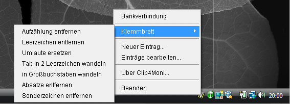

 Clip4Moni ist ein kleines Programm zum Verwalten von Textschnipseln. Sie kennen sicher folgendes Problem: bestimmte Texte tippt man wieder und wieder; sei es die Grußformel am Ende einer E-Mail, die Bankverbindung für eBay, Informationen zu Porto- und Verpackungskosten, usw. Zwar bieten mittlerweile viele Programme so genannte Auto-Texte an, aber irgendwie funktionieren alle auf unterschiedliche Weise. Und jedes Programm will seine eigene Datenbank haben. Damit ist jetzt Schluss. Clip4Moni arbeitet mit jedem Programm zusammen, das das Windows-Klemmbrett unterstützt. ...und das sind sehr, sehr viele. Nun ist ganz sicher Clip4Moni nicht das erste seiner Art, aber was mein Programm auszeichnet ist seine schnörkellose, einfache Bedienung. Alle Funktionen sind über das Menü, das Sie hier sehen, erreichbar. Um einen Textschnipsel in Clip4Moni zu übernehmen, rufen Sie einfach Neuer Eintrag auf. Vergeben Sie einen Namen, unter dem der Text im Menü erscheinen soll, und fertig! Um einen Textschnipsel in ein anderes Programm einzufügen, klicken Sie einfach auf dessen Namen im Menü und anschließend Bearbeiten • Einfügen in der Zielanwendung.

Nutzungsbedingungen: Ich habe Clip4Moni mit großer Sorgfalt erstellt und getestet. Dennoch sind Computerprogramme grundsätzlich nie fehlerfrei. Die Nutzung meines Programms erfolgt ausdrücklich und ausschließlich auf eigene Gefahr. Ich lehne jegliche Haftung oder Schadenersatzansprüche für Schäden, die durch die Nutzung des Programms entstanden sind, ab. Starten Sie Clip4Moni nur, wenn Sie hiermit einverstanden sind. Die Übernahme des Programms in Software-Sammlungen, beispielsweise auf CDs oder DVDs, bedarf meiner ausdrücklichen schriftlichen Zustimmung.